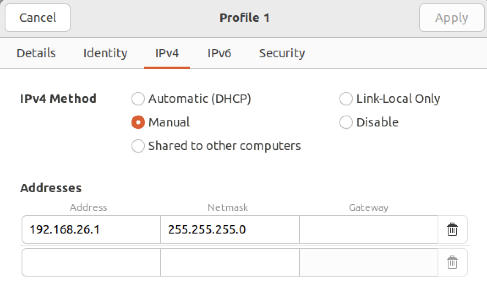
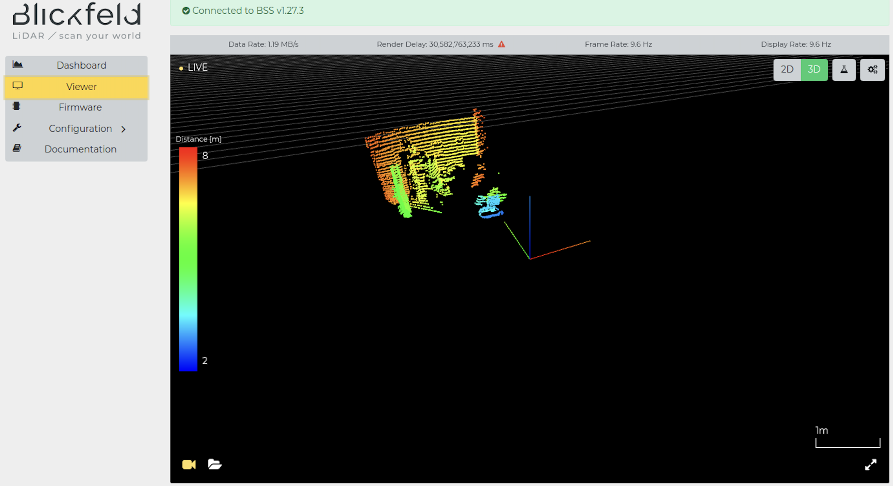
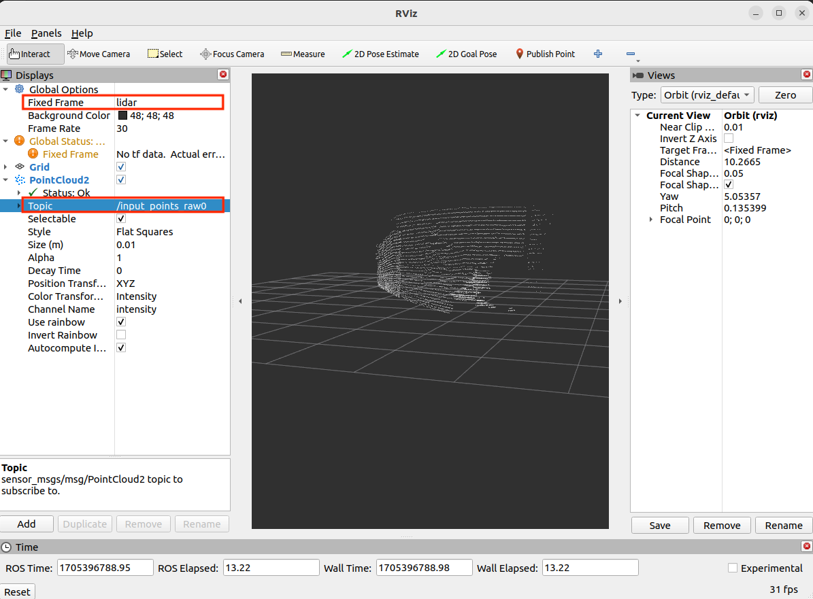
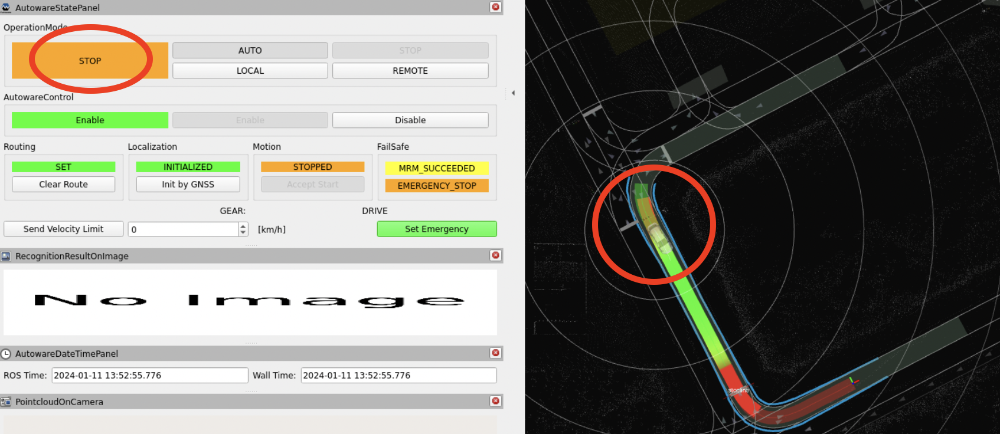
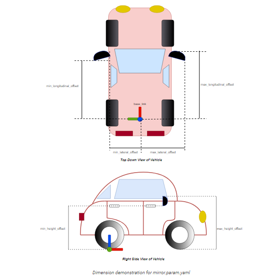

The Autoware Development Guide from NEWSLAB, NTU
Autoware is one of the most complete and comprehensive open-source project for autonomous driving. Our team has been extensively using this software to deploy it on various kinds of vehicles, and regard it as a major research platform. The aim of this guide is to summarize the work and experience to customize the Autoware to fit into our research, and provide good practices on software development.
Development Environment
System Requirements
Autoware imposes strict requirement on system environment. It requires specific operating system, specific CUDA version and specific ROS version. Be careful to set up your box.
- Ubuntu 22.04
- ROS Humble + Cyclone DDS as default RMW back-end
- CUDA 12.3
- CUDNN 8.9.5.29-1+cuda12.2
- TensorRT 8.6.1.6-1+cuda12.0
In the case that the box does not support required OS or NVIDIA driver is not available. One workaround is to start an Ubuntu 22.04 container and put Autoware into it.
The Autoware Complex
Autoware itself is a large ROS project. The packaging and execution follow ROS convention. Autoware provides various kinds of components to complete an autonomous vehicle system, including perception, planning and more parts. It's recommended to explore the node diagram to explore the packages and their relations.
{kind=link}
- Message type definitions
- Launch script packages to start a component and the whole system.
- autoware_launch to launch the whole system.
- sample_sensor_kit_launch to launch sensor driving nodes.
- sample_vehicle_launch to launch motor controlling nodes
- Packages for vehicle sensing, control, etc
- See the section below the learn the Autoware project layout.
Understanding Autoware Launch System
The way to run Autoware depends on the execution scenarios, which are
written as respective launch files. The files can be found in the
autoware_launch
package. The launch file autoware.launch.xml is entry file to
launch the whole system. To launch this file, these arguments
map_path, vehicle_model, and sensor_model must be assigned.
ros2 launch autoware_launch autoware.launch.xml \
map_path:=$HOME/autoware_map/sample-map-planning \
vehicle_model:=sample_vehicle \
sensor_model:=sample_sensor_kit
TODO(aesop): Configuration, Tricks
Autoware Source Code Layout
Autoware source code consists of many GitHub repositories. The
top-level repository is
autowarefoundation/autoware,
which does not include any source code. It has a autoware.repos file
listing dependent repos. Users have to run vcs import < autoware.repos to download these repositories.
Note that vcs does not provide fine-grained version control. Hence,
downloaded repos do not pin to specific Git commits, but tracks to
update-to-date master branch. It makes troubles sometimes because repos
change frequently.
Read autoware.repos and you can see the packages classified as
follows.
- core
- Contains the most important package for self-driving cars and determine the message field type and field name for services.
- universe
- Packages developed by other third-party communities.
- launcher
- A launch configuration repository for Autoware, containing node configurations and their parameters, where the launch files will be.
- sensor_component
- Sensing component is a collection of modules that applies some primitive pre-processing to the raw sensor data. The sensor input formats are defined in this component.
- sensor_kit
- Launch each sensors according to the parameters.
- vehicle
- Launch each vehicles according to the parameters.
- param
- This repository stores parameters that change depending on each vehicle.
Build Autoware
Source Code and Dependency Preparation
Follow the instructions on this page to build Autoware source code.
Switch to specific branch depending on your OS and ROS2 version.
Clone the Autoware Repo.
git clone https://github.com/autowarefoundation/autoware.git
cd autoware
There are two ways to install dependent libraries. Either (1) run the official Ansible script or (2) install the them manually.
The Ansible script is only recommended for freshly installed Ubuntu systems. It will interfere with existing CUDA. If you have custom CUDA installation, such as JetPack, it's recommended to go on the manual way.
Install dependent packages. You may skip “Install ROS 2“ if you already have ROS 2 installed. The “Install Nvidia CUDA/cuDNN/TensorRT“ should be skipped if they are already configured on the system.


Compile the Autoware Project
The Autoware repo layout itself follows ROS convention. All packages
reside in the src directory.
The vcs-rosdep-colcon Chain
The vcs → rosdep → colcon chain is a common practice to build most ROS projects, including Autoware.
-
Run
vcsto download dependent repositories into thesrcfolder.cd autoware mkdir src vcs import src < autoware.repos -
Run
rosdepto install system dependencies. It scans through packages withinsrcand runsapt install xxxaccording to their dependency requirements.source /opt/ros/humble/setup.bash rosdep install -y --from-paths src --ignore-src --rosdistro $ROS_DISTRO -
Build the whole Autoware project using
colcon. It scans through packages insrcand compile them according to their dependency order.colcon build --symlink-install --cmake-args -DCMAKE_BUILD_TYPE=Release
Compilation Result
colcon produces the followings directories serving respective
purposes.
installplaces final products of the build, storing compiled program binaries and libraries.buildstores the intermediate files for the build.logsaves the compilation log.
The --symlink-install option creates symbolic links to source files
in the installation. It makes life easier in the case that Python
scripts and configuration files are modified frequently.
Troubleshooting
Missing Dependencies
In many cases, compilation error is due to missing dependencies. Run
rosdep to make sure required system dependencies available before
compilation.
rosdep update --rosdistro $ROS_DISTRO
Disable Warning-as-errors
Autoware enforces strict auditing rules by default. Remove the -Werror option to lift the restriction. Open autoware_package.cmake and modify it as follows.7
- add_compile_options(-Wall -Wextra -Wpedantic -Werror)
+ add_compile_options(-Wall -Wextra -Wpedantic)
Compile Error on trtexec_vender
Facing problem when building trtexec_vender. Modify src/universe/autoware.universe/common/trtexec_vendor/CMakeLists.txt.
- GIT_TAG ${TENSORRT_VERSION}
+ GIT_TAG v${TENSORRT_VERSION}
Restrict Parallel Colcon Workers
Colcon build failed because too many packages were building in parallel. (Exceeding the hardware load limit.) Adding parameter “--parallel-workers“ when executing colcon build.
colcon build \
--symlink-install \
--cmake-args -DCMAKE_BUILD_TYPE=Release \
--parallel-workers 1
TODO(Roger)
Using Autoware RViz
TODO(Roger)
Customization
The customization process starts by a new repository along side Autoware. We did not modify the Autoware source repo because it creates hard forks. Instead, the project-specific packages, launch files and configuration files are placed in the new repo. We will play the source combo trick to append our packages to existing compiled Autoware.
The Source Combo Trick
Project Layout & Version Control
TODO(Jerry)


Sensors
Sensor packages are usually maintained by vendors. It usually ships a
vendor-specific driver and a ROS package depending on that driver. For
example, the system has to install blickfeld-scanner-lib to allow
the ROS package to scan data from Blickfeld Cube1 LiDARs.
There are chances that the ROS package could be out-of-date, the driver is incompatible with the box, or the vendor does not provide ROS implementation. For example, ZED X shipped a closed-source driver running on old Ubuntu 20.04, which OS is incompatible with Autoware. Blickfeld ships an old ROS package not satisfying Autoware's need. Ask the vendor for support to resolve these issues. Good luck with your cherished sensor.
LiDARs and Radars
It's common that the LiDAR sensor connects to the box via an Ethernet
cable, transmitting UDP packets in vendor-specific format. The ROS
node or the driver listens and converts them into point cloud frames
in sensor_msgs/msg/PointCloud2 message type.
These steps must be done providing that LiDARs are Ethernet connected.
-
The box and the LiDAR reside in the local network sharing a common IP prefix. You may assign a static IP to the box.
- e.g. The Velodyne VLP32-C has the address 192.168.10.1. The box should be addressed at 192.168.10.x other than 192.168.10.1.
-
Some boxes, such as AGX Orin, have only one Ethernet port. Use USB-to-Ethernet adapter would be your friend.
Cameras
TODO(Jerry)
Velodyne VLP-32C
TODO(Allan&子騰)
Sensor’s configuration can be modified in file
autoware/src/sensor_kit/sample_sensor_kit_launch/common_sensor_launch/launch/velodyne_VLS128.launch.xml,
since we choose to other sensor_kit setting rather than create one for
our usage.
<arg name="model" default="VLP32"/>
<!-- omit... -->
<arg name="sensor_ip" default="192.168.10.10"/>
To correct lidar’s relative position and direction, compare with
vehicle, you must modified the configuration in file
autoware/src/param/autoware_individual_params/individual_params/config/default/sample_sensor_kit/sensors_calibration.yaml.
(similar file named sensors_calibration.yaml may appear at multiple places, you should be aware of the file path)
base_link:
sensor_kit_base_link:
x: 0.9
y: 0.0
z: 2.0
roll: -0.001
pitch: 0.015
yaw: -0.0364
velodyne_rear_base_link:
x: -0.358
y: 0.0
z: 1.631
roll: -0.02
pitch: 0.7281317
yaw: 3.141592
Blickfield Cube1
TODO(許)
The BLS driver.
- Connect with Blickfeld Cube1.
- Add a wired interface with the IP address 192.168.26.1/24 
- The displayed technology is only supported by the Chrome browser. Use Chrome to check if the webpage correctly displays the point cloud. 
- Install blickfeld-scanner-library (BSL). Please check the official installation document.
# download
sudo apt install libprotobuf-dev libprotobuf23 protobuf-compiler
git clone https://github.com/Blickfeld/blickfeld-scanner-lib.git
cd blickfeld-scanner-lib
git checkout v2.20.6
git submodule update --init --recursive
# build
cmake -B build -S .
cmake --build build --parallel
sudo cmake --install build
- Build blickfeld cube 1 ROS2 package
Blickfeld ROS2 package official document
-
Download Cube 1 ROS 2 Driver from https://www.blickfeld.com/resources/
-
Install dependencies
sudo apt install ros-${ROS_DISTRO}-diagnostic-updater
sudo apt install ros-${ROS_DISTRO}-diagnostic-msgs
- Source ROS2 and create colcon workspace
source /opt/ros/${ROS_DISTRO}/setup.bash
mkdir -p ~/blickfeld/src
- Move the
ros2_blickfeld_driverpackage intoblickfeld/src - Modify
blickfeld/src/ros2_blickfeld_driver_src-v1.5.5/CMakeLists.txt- Change C++ standard from 14 to 17
- set(CMAKE_CXX_STANDARD 14)
+ set(CMAKE_CXX_STANDARD 17)
- Update Blickfeld scanner package version from 2.18.2 to 2.20.6
- find_package(blickfeld-scanner 2.18.2 REQUIRED full)
+ find_package(blickfeld-scanner 2.20.6 REQUIRED full)
- Add include directories for ROS Humble
+ include_directories(/opt/ros/humble/include/tf2_geometry_msgs)
+ include_directories(/opt/ros/humble/include/tf2)
+ include_directories(/opt/ros/humble/include/tf2_ros)
+ include_directories(/opt/ros/humble/include/cv_bridge)
+ include_directories(/opt/ros/humble/include/rclcpp)
+ include_directories(/opt/ros/humble/include/rcl)
+ include_directories(/opt/ros/humble/include/rcl_yaml_param_parser)
+ include_directories(/opt/ros/humble/include/rcpputils)
+ include_directories(/opt/ros/humble/include/tracetools)
+ include_directories(/opt/ros/humble/include/rcl_interfaces)
+ include_directories(/opt/ros/humble/include/libstatistics_collector)
+ include_directories(/opt/ros/humble/include/statistics_msgs)
+ include_directories(/opt/ros/humble/include/diagnostic_msgs)
+ include_directories(/opt/ros/humble/include/rclcpp_components)
+ include_directories(/opt/ros/humble/include/class_loader)|
-
Modify
blickfeld/src/ros2_blickfeld_driver_src-v1.5.5/src/blickfeld_driver.cpp- Add
.c_str()to convert the string to a C-style string
- Add
- log_message.second.str());
+ log_message.second.str().c_str());
- Build your workspace
cd ~/blickfield/src
colcon build --symlink-install --cmake-clean-first
- Running the Blickfeld ROS2 node
- Switching to desired DDS
export RMW_IMPLEMENTATION=rmw_cyclonedds_cpp
- Run the ROS2 node, change the blickfeld topic name to fit autoware pointcloud_preprocessor
ros2 run blickfeld_driver blickfeld_driver_node \
--ros-args -p host:=192.168.26.26 \
--remap __node:=bf_lidar \
--remap bf_lidar/point_cloud_out:=input_points_raw0
- Visualize the published data
- Launch rviz2, config Fixed Frame to
lidarand Topic toinput_points_raw0
- Launch rviz2, config Fixed Frame to
rviz2

Camera: ZED X Mini
TODO(許)
ZED SDK is bounded to jetpack: version 5.1.2 (ubuntu 20.04)
As of Jan 11, 2024, there is currently no ZED SDK suitable for jetpack 6.
Failed to install SDK in ubuntu 22.04 manually and compile ros2 package:
|
How to install ZED in jetpack5:
Please follow the instructions in this page.
Stereolabs provides a ROS2 wrapper for the ZED SDK. It is designed to integrate ZED stereo cameras with ROS2.
To install zed-ros2-wrapper, there are some prerequisites:

Make sure to install all of them in the corresponding version.
To install the zed_ros2_wrapper, open a bash terminal, clone the package from Github, and build it:
# Create your workspace if it does not exist
mkdir -p ~/ros2_ws/src/
cd ~/ros2_ws/src/
git clone --recursive https://github.com/stereolabs/zed-ros2-wrapper.git
cd ..
# install dependencies
sudo apt update
rosdep install --from-paths src --ignore-src -r -y
# build the workspace
colcon build --symlink-install \
--cmake-args=-DCMAKE_BUILD_TYPE=Release \
--parallel-workers $(nproc)
To start the ZED node, open a bash terminal and use the CLI command ros2 launch:
ros2 launch zed_wrapper zed_camera.launch.py camera_model:=<camera_model>
Replace <camera_model> with the model of the camera that you are
using: 'zed', 'zedm', 'zed2', 'zed2i', 'zedx', 'zedxm'.
You can also start a pre-configured instance of rviz2 to visualize all the information available.
Please see this page for source installation.
First, build the package:
cd ~/ros2_ws/src/ #use your current ros2 workspace
folder
git clone https://github.com/stereolabs/zed-ros2-examples.git
cd ../
rosdep install --from-paths src --ignore-src -r -y
colcon build --symlink-install --cmake-args=-DCMAKE_BUILD_TYPE=Release
source ~/.bashrc|
Then, you can use following command to start the ZED ROS2 Wrapper node and Rviz2 simultaneously.
ros2 launch zed_display_rviz2 display_zed_cam.launch.py camera_model:=<camera_model>
Below is the example running rviz2:

Perception
Example: lidar_centerpoint
TODO(allan&簡, 仴筑): the usage of model files. The CUDA env setup. Testing procedure.
Newslab note: Launch lidar-centerpoint demo document
GitHub : centerpoint_vs_centerpoint-tiny

centerpoint\_vs\_centerpoint visualizer
- Download and compile model files
- Create a folder named
~/autoware_data/lidar_centerpoint, where contains four model files. - When first running lidar_centerpoint package, it will automatically compile and produce engine file. The engine file is related to CUDA version. As a result, if you want to run lidar_centerpoint on a different computer where CUDA version is different from the previous one, you need to delete the engine file and recompile.
- Create a folder named
- Testing procedure
$HOME/2023-08-09_rsu-to-car-lidar-fusion-rosbag/rosbag2_2023_08_09-13_33_22can be change to other rosbag record for testing.- The output detection will be sent to
/objectstopic, you may useros2 topic echocommand to check whether the package works.
source ~/autoware/install/setup.bash
ros2 bag play -l \
$HOME/2023-08-09_rsu-to-car-lidar-fusion-rosbag/rosbag2_2023_08_09-13_33_22 \
--remap /velodyne_points:=/sensing/lidar/pointcloud
ros2 run tf2_ros static_transform_publisher 0 0 0 0 0 0 base_link velodyne
ros2 launch lidar_centerpoint lidar_centerpoint.launch.xml
Example: QBOX Driver
TODO:(許)
The QBOX driver is a ROS node designed for reading Ethernet messages
from QBOX. It publishes these messages into various ROS topics and can
automatically stop the Autoware ego vehicle by invoking the
/api/operation_mode/change_to_stop service in Autoware if it detects
a high collision risk, as indicated by a low time-to-collision (TTC)
value.
-
Clone the Repo, ensure the project is built following the tutorial.
-
Run the QBOX node using the following command.
source ~/autoware/install/setup.bash
source install/setup.bash
ros2 run qbox qbox
To specify custom values for ip, port, or ttc, use the
following format:
source ~/autoware/install/setup.bash
source install/setup.bash
ros2 run qbox qbox --ros-args -p ip:=<your_ip> -p port:=<your_port> -p ttc:=<your_ttc>
For example:
ros2 run qbox qbox --ros-args -p ip:=10.0.0.2 -p port:=9998 -p ttc:=5
-
Testing if ego vehicle stop when it detects a high collision risk.
- Follow the tutorial in Planning simulation to launch the simulator.
- Start the ego vehicle in AUTONOMOUS mode.
- Observe if the ego vehicle stop due to low TTC values or check if
OperationMode in AutowareStatePanel change from AUTONOMOUS to
STOP.
- AUTONOMOUS

-
STOP

-
Check if ROS topic publish correctly
Run the node and test the following data topics in separate shells:
-
FCW Data: Observe
messageandTTC.valuefor collision risk assessment.ros2 topic echo /perception/fcw_TTC -
LDW Data: Monitor
messageandLD_happened_code.valuefor lane departure alerts.ros2 topic echo /perception/ldw_lane_departure
Control
The controller module is one of the most diverse part in Autoware. That's because the controlling mechanism is vehicle-specific. Petrol-driven cars have pedals. Electric cars adopts electronic stability controller (ESC). Small battery-driven cars use PWM controller. Hence, there is no common interface for low-level control.
Autoware does not assume the controlling mechanism, but sends commands
in autoware_auto_control_msgs/AckermannControlCommand type, which
include the target speed and target acceleration, etc. A vehicle driver
node must be implemented to convert these commands to low-level
controlling commands.
Autoware defaults to the PACMod protocol over CANbus to send commands. Unfortunately, it is available only on a handful of vehicles (link). There are chances that you write your vehicle driver.
Example: ARTC CANbus
To communicate with CAN bus network, we mainly have two ways:
Firstly, use the ros2_socketcan ROS package which provided by AWF.
It creates two topics: from_can_bus and to_can_bus, the former is
a topic to be subscribed to read CAN bus frame from the CAN bus
network and the latter is a topic to be published to write CAN bus
frame to CAN bus network. Note that you have to plugin your Kvaser
adapter before running the socketcan ROS package, and wake up your
Kvaser adapter by running the command:
sudo modprobe can
sudo modprobe can_raw
sudo ip link set can0 type can bitrate 5000000
sudo ip link set up can0
The bitrate can be changed if needed.

In order to use ros2_socketcan ROS package, we cannot preinstall
Leaf driver which vendored by Kvaser. Type lsmod \| grep leaf to
verify the installation of the Leaf driver, if you see the below
output message, then the system has installed Leaf driver.

Secondly, use the Kvaser driver and corresponding APIs to
communicate with the CAN bus network. Visit this
link
if you're using Windows. However, visit this
link
if you're running Linux. Next, choose the proper SDK and Kvaser
driver. After that, install the corresponding CANlib to control the
installed CAN driver. Take python as an example, run pip install canlib to install python wrapper for Kvaser CANlib. After
installation, you can run below sample python script to verify all
installation are working. If CANlib and driver working, your Kvaser
adapter information should be printed out.

Note that you have to plugin your Kvaser adapter before running the python script.
Every vehicle has its own specific CAN bus communication
protocol. Thus, in order to use CAN bus communication to operate the
vehicle, you must have the appropriate CAN message map in order to
send the proper CAN bus control command to the CAN bus network. The
PID controller assists in achieving smooth throttle and brake control,
which is necessary to replicate human driving behavior. If you are
using python for development the control logic, you can install
simple-pid package using pip install simple-pid command to use the
PID controller. To leverage PID controller, your vehicle needs to be
able to retrieve the vehicle's current state, e.g., current speed of
the vehicle, current acceleration of vehicle, current steering angle
of vehicle, etc. You can set your setpoint(SP) and calculate the next
step value with the current status of vehicle. After a while, the
vehicle status will approach to the SP smoothly. Note that PID
controllers need to be tuned for individual type of vehicle.
TODO(ykming)
SocketCAN, kvaser, PID controller
Example: F1EIGTH ESC Controller
A script is provided by the manufacturer for controlling F1EIGTH car using a terminal interface. It utilized Adafruit's PCA9685 library to manage the steering servo and the Electronic Speed Controller (ESC). The user can control acceleration, braking, and steering via keyboard inputs. The code also includes an interface for displaying speed and steering angle updates and features for initiating and terminating the program.
The code primarily revolves around the concept of Pulse Width
Modulation (PWM), which is crucial for controlling the speed of motors
and the position of servos in remote-controlled cars. The Adafruit
PCA9685 library used in the script allows for precise control over PWM
signals. This is essential for adjusting the speed of the car's motor
(through the ESC) and the angles of the steering servo. The
pwm.set_pwm_freq() function sets the frequency of the PWM signal,
and pwm.set_pwn() is used to specify the channel, on-time, and
off-time of the PWM signal, directly influencing motor speed and servo
position. This integration of software and hardware illustrates the
advanced control capabilities provided for remote-controlled vehicles.
Vehicle Configuration
(Recommendation : Understand URDF and ROS2 roughly before next step)
There are two part to describe vehicle, one is car’s parameters(fig) and another one is relative position of the sensor regrading to car.

sample_vehicle_description contains the file related to parameters
of car
- config : parameter of car
- mesh : appearance of car (could be ignored)
- urdf : size of car
There are three folders related to sensors.
sample_sensor_kit_launchfor launching sensors- launch: used for launch sensors' drivers. If you use lidar, you need
to write your point cloud frames into
pointcloud_preprocessor.launch.py
- launch: used for launch sensors' drivers. If you use lidar, you need
to write your point cloud frames into
sample_sensor_kit_descriptionxacro: used for describing relative position of sensor_kit_base_linksensor_kit.xacro: used for sensors’ position
sample_individual_paramsconfig/default: used for sensors’ direction
Map & Localization
TODO